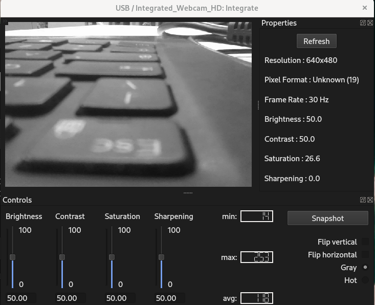

Camera support depends on build options and installed SDKs. Typical backends include:
On startup, connected cameras are added to the Instruments menu. Selecting a camera opens a live view window; frame rate depends on resolution and workstation graphics capability. The camera window exposes common controls such as exposure and gain when supported by the device.

The video area always receives the full-resolution sensor frame; nothing is downscaled or compressed before display. How the frame is drawn is chosen from the camera window menus:
In both modes you can zoom by dragging a rectangle with the left mouse button. The selection snaps to the aspect ratio of the video area so the zoomed region fills the display; it is magnified without smoothing, so individual sensor pixels stay visible as blocks. Double-click to return to the full frame.
When the camera exposes properties, the Properties dock shows the sensor
pixel under the mouse pointer as x = .. y = .. value = ... The
coordinates are real sensor coordinates whatever the zoom or display mode, and the
value is read from the acquisition buffer (the raw 16-bit count for 16-bit
cameras, else the 8-bit value), not from the rendered image.
The Gray / Hot buttons in the Controls dock select the colour table used to render the 8-bit display; min, max and avg report the statistics of the current frame.